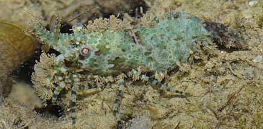
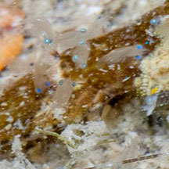
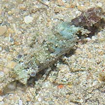

|
|
| shrimps text index | photo index~ |
| Phylum Arthropoda > Subphylum Crustacea > Class Malacostraca > Order Decapoda > Family Hippolytidae > prawns and shrimps |
| Saron
shrimp awaiting identification* Family Hippolytidae updated Jan 2020 Where seen? This rather large and stumpy shrimp is sometimes seen near reefs, usually among coral and coral rubble. It is not very active and tends to be motionless and thus overlooked as it is so well camouflaged on an encrusted surface. When it realises it has been spotted, it rapidly slinks away into a hiding place. It can also suddenly leap quite a distance away if alarmed. Features: 4-5cm. Fat and short with a hump-back. Some have very hairy front legs. These shrimps come a swirl of various colours from brown, red, green to blue. It is also called the Marbled shrimp. |
|
 Tanah Merah, Aug 09 |
 Tanah Merah, Sep 09 |
|
 Just released babies? |
*Species are difficult to positively identify without close examination.
On this website, they are grouped by external features for convenience of display.
| Saron shrimps on Singapore shores |
On wildsingapore
flickr
|
| Other sightings on Singapore shores |
 Cyrene Reef, Jul 10 Photo shared by James Koh on his blog. |
|
References
|